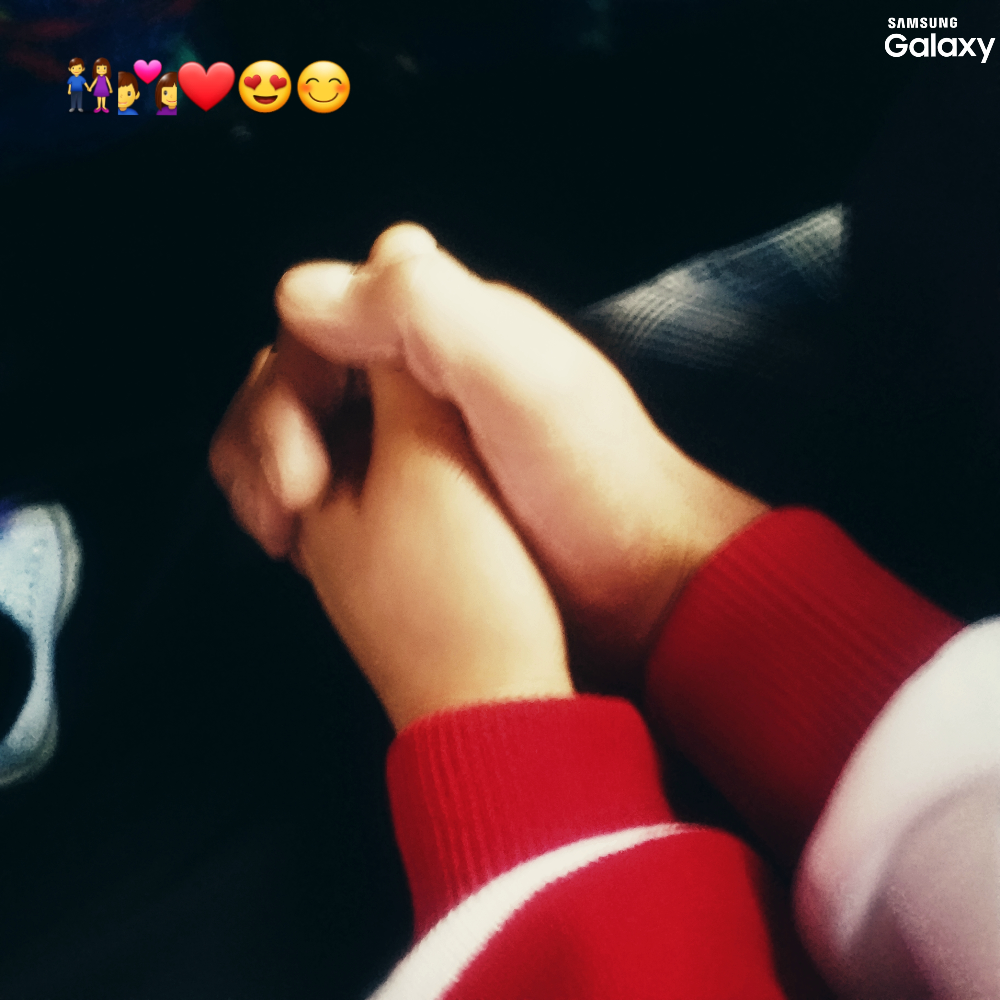
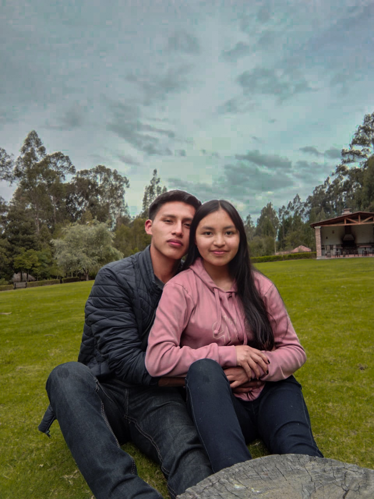
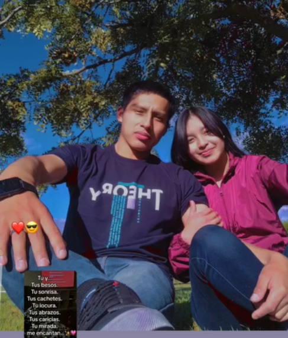
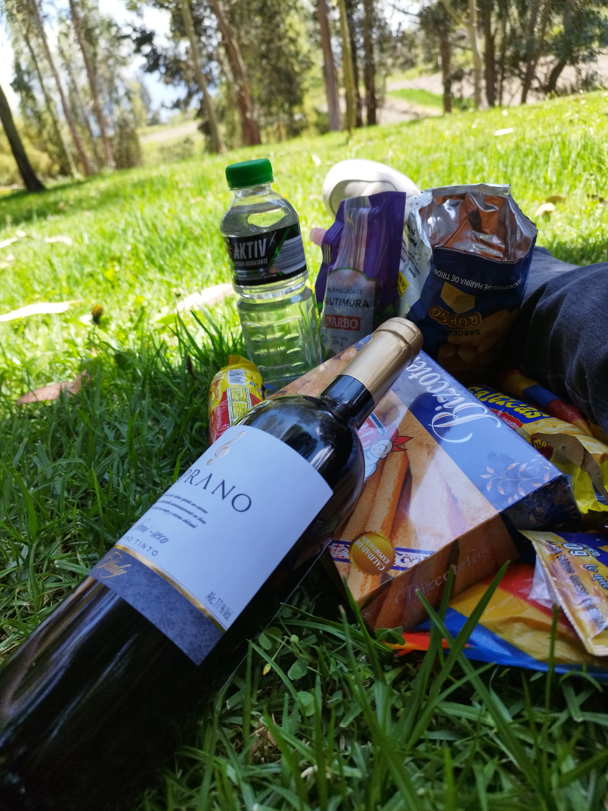
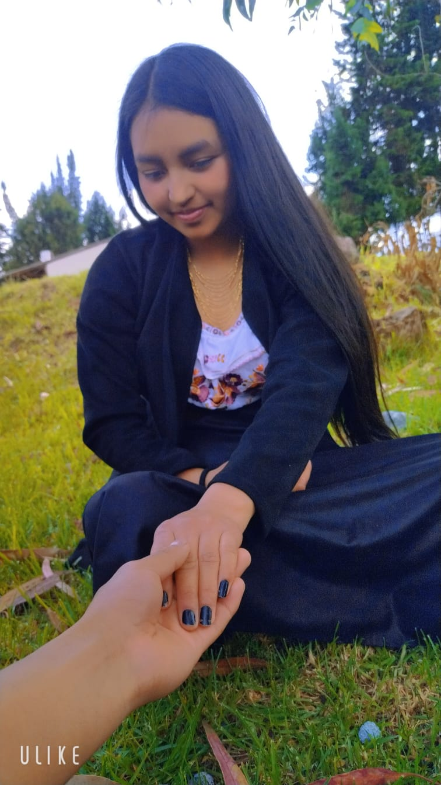

Donde el tiempo se detuvo.
Capítulo 7: Estás tú, siempre tú.
Dedicado a mi inspiración más grande, la niña que me amó como nadie en la vida y la dueña de los ojos que jamás olvidaré. Este rincón es para ti, por todo lo que fuimos y por el hombre que me ayudaste a construir.

Donde todo empezó
Inolvidable
Risas eternas Mi debilidad
Mi debilidad
 Escapada a Baños
Escapada a Baños

Nuestro picnic
Labios inolvidables

Siempre tan hermosa
Esa mirada...
- Si alguien me preguntara cómo es ella, le diría que es de esas personas que tienen el don de
curar,
no solo con lo que estudia, sino con su sola presencia. Recuerdo que andaba sin rumbo, hasta que
apareció ella y todo cambió. Por ella quise
ser alguien. Me dediqué a estudiar y a aprender de todo, no por presumir, sino porque quería
convertirme en el hombre que ella merecía. Mi musa, mi inspiración, mi Medicina personal; ella me
curó el alma cuando yo estaba más roto.
- Hubo un tiempo en el que, cuando recién estaba aprendiendo a programar, mis variables llevaban su
nombre. Pasaba horas haciendo programas pequeños, quizás un poco inútiles para el mundo, pero que
para mí eran tesoros porque los hacía pensando en sacarle una sonrisa. Algunos de esos códigos nunca
se los mostré... y hoy me duele ver cómo se quedaron ahí, al igual que nuestro sueño más grande. Yo
me imaginaba un futuro donde el mundo nos viera, la 'Doc' y el 'Ing', juntos contra todo. Me mata
saber que por mis propios errores ese sueño hoy se siente tan lejano, y que ahora que te vas, el
alma me vuelve a doler.
- Me quedo con lo mejor de nosotros mientras sigo mi propio camino. Este rincón digital no se va a
quedar estático; lo estaré actualizando cada vez que la recuerde, ya sea en medio de una línea de
código a las tres de la mañana, en mi trabajo o en esos silencios del día donde su falta se siente
más fuerte. Gracias, Katerin, por estos años de compañía, por aguantar conmigo incluso cuando las
cosas se pusieron feas y por enseñarme lo que significa amar de verdad.
- Siempre estaré para ti, a un mensaje de distancia. Fuiste, eres y serás mi inspiración más grande.
Cuídate mucho, donde quiera que la vida te lleve.
"Sé que te gustan las grandes historias... la nuestra siempre será mi favorita."
Canciones que siempre me harán recordarte
"Pásate de vez en cuando por aquí.
Dejaré nuevas canciones
conforme los recuerdos me vayan ganando el pulso."